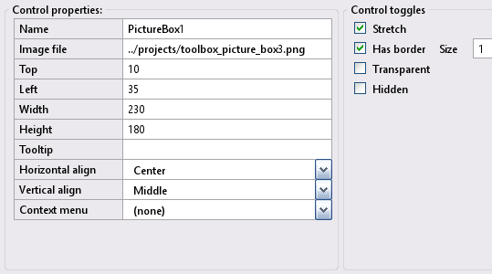
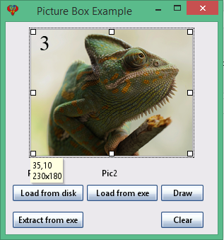

Toolbox Picture-box
User A PictureBox control in an InForm application can be used to display a static image file on a form. Alternatively, you can use a PictureBox control as a drawing surface. This page provides more detailed information about PictureBox controls.
Images used on this page can be found in folder "\inform_tutorial\images\toolbox".
Picture-box control
Create a new Picture-box control by clicking the Picture-box icon in the Toolbox. The newly created control will be displayed in the preview window; allowing you to move it around to meet your design requirements. Edit the Picture-box properties as necessary.
11) Picture-box Properties:
Picture-box example: Preview window.
Note: Picture-box properties will reflect the highlighted control selected in the preview window, enabling you to customize it as needed.
A PictureBox control can be used to display a static image file on a form. Alternatively, you can use a PictureBox control as a drawing surface. Additionally, a PictureBox control will maintain a loaded image's aspect ratio if resized by the corner handles.
Design time.
At design time, load an image by setting the "Image file" property to the image file name and its relative path.
Note: To deploy your application, you must include the image with the executable.
../projects/toolbox_picture_box3.pngRun time.
At run time, the LoadImage method is used to load a valid image file into a Picture Box control:
Note: To deploy your application, you must include the image with the executable.
LoadImage Control(ControlID), ImageFile$If the specified ImageFile$ can't be found or isn't a valid image, an "image not found" or "invalid image file" warning is shown in the control's canvas.
To reset a control's canvas, pass an empty ImageFile$ to the LoadImage method.
LoadImage Control(ControlID), ""Using PictureBox as a drawing surface.
Using a PictureBox as a drawing surface allows you to draw directly onto its surface using QB64pe's drawing commands:
Extract Image - direct draw to Picture box
An image can be embedded using the $Embed command. This image is extracted using its counterpart, the _Embedded$ command. A pointer to the image is obtained using the _Loadimage function. This image is directly drawn to the picture box using _PutImage between tags (BeginDraw PictureBox/EndDraw PictureBox). The _PutImage function uses the image handle provided by the _LoadImage function. An example is shown below:
$Embed:'.\toolbox_picture_box2.png','mpg2'
Dim pic2 As Long
pic2 = _LoadImage(_Embedded$("mpg2"), 32, "memory") 'mpg2=handle 32=bit-image memory=buffer
BeginDraw PictureBox1
_PutImage , pic2
EndDraw PictureBox1
For additional information, refer to page Icons, Images and Title.
Draw directly to the PictureBox
You directly draw to the picture box as follows:
BeginDraw PictureBox1
Drawing code here
EndDraw PictureBox1
What BeginDraw does is set the proper _DEST, so you don't need to specify it. What EndDraw does is reset _DEST to the proper one and trigger a .Redraw (if you set the .Redraw property of a control to True, you force InForm to redraw its surface. To trigger a global redraw, __UI_ForceRedraw = True - usually rarely needed too).
An example of directly drawing to the picture box is shown below:
LoadImage Control(PictureBox1), "" 'clear screen
BeginDraw PictureBox1
Cls , _RGB32(255, 255, 255)
Line (10, 10)-(180, 10), _RGB32(255, 0, 0)
Line (20, 20)-(220, 110), _RGB32(6, 255, 6), BF
Line (10, 150)-(220, 170), _RGB32(6, 6, 255), BF
Circle (100, 180), 50, _RGB32(255, 6, 255)
EndDraw PictureBox1
Picture-box control example - refer to the above image.
Specification: Let the Picture-box control example have the following design specification:
- Button load image 1 from disk and display in picture box.
- If the above is not displayed, Add a button to extract image 1 from the executable file itself and save it to disk.
- Add a button to extract image 2 from the executable and display it directly in the picture box.
- Add a button to demonstrate directly drawing to the picture box.
- Finally, a clear button removes images from the picture box.
Implimenation: The following provide solutions for the above:
- At design time, use metacommand $Embed to embed image 1
- At design time, set the image file property to toolbox_picture_box3.png
- Use the function _Embedded$ to extract an image from an executable.
- Use BeginDraw/EndDraw and the function _PutImage to draw an image into a picture box.
- Use BeginDraw/EndDraw and raw commands to directly draw to the picture box.
- For additional details, refer to the file picture_box_example.bas.
- Save the project at the layout stage by selecting File -> Save project as and enter the name picture_box_example.
Basic file picture_box_example.bas
': This program uses
': InForm - GUI library for QB64 - v1.5
': Fellippe Heitor, 2016-2024 - fellippe@qb64.org - @fellippeheitor
': https://github.com/FellippeHeitor/InForm
'-----------------------------------------------------------
Option _Explicit
$Embed:'.\toolbox_picture_box1.png','mpg1' ' <---
$Embed:'.\toolbox_picture_box2.png','mpg2' ' <---
$Embed:'.\toolbox_picture_box3.png','mpg3' ' <---
$Embed:'.\toolbox_picture_box4.png','mpg4' ' <---
Dim Shared filename As String
Dim Shared str1 As String ' file string <---
': Controls' IDs: ------------------------------------------------------------------
Dim Shared PictureBoxExample As Long
Dim Shared LoadFromDiskBT As Long
Dim Shared ExtractFromExeBT As Long
Dim Shared LoadFromExeBT As Long
Dim Shared DrawBT As Long
Dim Shared ClearBT As Long
Dim Shared Pic1LB As Long
Dim Shared Pic2LB As Long
Dim Shared PictureBox1 As Long
': External modules: ---------------------------------------------------------------
'$INCLUDE:'InForm\InForm.bi'
'$INCLUDE:'InForm\xp.uitheme'
'$INCLUDE:'picture_box_example.frm'
': Event procedures: ---------------------------------------------------------------
Sub __UI_BeforeInit
End Sub
Sub __UI_OnLoad
End Sub
Sub __UI_BeforeUpdateDisplay
'This event occurs at approximately 60 frames per second.
'You can change the update frequency by calling SetFrameRate DesiredRate%
End Sub
Sub __UI_BeforeUnload
'If you set __UI_UnloadSignal = False here you can
'cancel the user's request to close.
End Sub
Sub __UI_Click (id As Long)
Select Case id
Case PictureBoxExample
Case LoadFromDiskBT ' Load image from disk and display <---
LoadImage Control(PictureBox1), "toolbox_picture_box1.png" ' <---
Case ExtractFromExeBT ' Extract embeded image1 and save to disk <---
filename = "toolbox_picture_box1.png" ' <---
str1 = _Embedded$("mpg1") ' set str1 to extracted embeded string <---
Open filename For Binary As #2 'open file for binary output <---
Put #2, , str1 ' write data to file <---
Close #2 ' close file handle <---
Case LoadFromExeBT ' Extract embeded image2 and display <---
Dim pic2 As Long
pic2 = _LoadImage(_Embedded$("mpg2"), 32, "memory") 'mpg2=handle 32=bit-image memory=buffer
BeginDraw PictureBox1 ' <---
'_PutImage , _LoadImage(".\pic1.jpg", 32) '/from file 'similar to this
_PutImage , pic2 ' <---
EndDraw PictureBox1 ' <---
Case DrawBT
LoadImage Control(PictureBox1), "" 'clear screen ' <---
BeginDraw PictureBox1 ' <---
Cls , _RGB32(255, 255, 255) ' <---
Line (10, 10)-(180, 10), _RGB32(255, 0, 0) ' <---
Line (20, 20)-(220, 110), _RGB32(6, 255, 6), BF ' <---
Line (10, 150)-(220, 170), _RGB32(6, 6, 255), BF ' <---
Circle (100, 180), 50, _RGB32(255, 6, 255) ' <---
EndDraw PictureBox1 ' <---
Case ClearBT
LoadImage Control(PictureBox1), "" '<---
Case Pic1LB
Case Pic2LB
Case PictureBox1
End Select
End Sub
Sub __UI_MouseEnter (id As Long)
Select Case id
Case PictureBoxExample
Case LoadFromDiskBT
Case ExtractFromExeBT
Case LoadFromExeBT
Case DrawBT
Case ClearBT
Case Pic1LB
Case Pic2LB
Case PictureBox1
End Select
End Sub
Sub __UI_MouseLeave (id As Long)
Select Case id
Case PictureBoxExample
Case LoadFromDiskBT
Case ExtractFromExeBT
Case LoadFromExeBT
Case DrawBT
Case ClearBT
Case Pic1LB
Case Pic2LB
Case PictureBox1
End Select
End Sub
Sub __UI_FocusIn (id As Long)
Select Case id
Case LoadFromDiskBT
Case ExtractFromExeBT
Case LoadFromExeBT
Case DrawBT
Case ClearBT
End Select
End Sub
Sub __UI_FocusOut (id As Long)
'This event occurs right before a control loses focus.
'To prevent a control from losing focus, set __UI_KeepFocus = True below.
Select Case id
Case LoadFromDiskBT
Case ExtractFromExeBT
Case LoadFromExeBT
Case DrawBT
Case ClearBT
End Select
End Sub
Sub __UI_MouseDown (id As Long)
Select Case id
Case PictureBoxExample
Case LoadFromDiskBT
Case ExtractFromExeBT
Case LoadFromExeBT
Case DrawBT
Case ClearBT
Case Pic1LB
Case Pic2LB
Case PictureBox1
End Select
End Sub
Sub __UI_MouseUp (id As Long)
Select Case id
Case PictureBoxExample
Case LoadFromDiskBT
Case ExtractFromExeBT
Case LoadFromExeBT
Case DrawBT
Case ClearBT
Case Pic1LB
Case Pic2LB
Case PictureBox1
End Select
End Sub
Sub __UI_KeyPress (id As Long)
'When this event is fired, __UI_KeyHit will contain the code of the key hit.
'You can change it and even cancel it by making it = 0
Select Case id
Case LoadFromDiskBT
Case ExtractFromExeBT
Case LoadFromExeBT
Case DrawBT
Case ClearBT
End Select
End Sub
Sub __UI_TextChanged (id As Long)
Select Case id
End Select
End Sub
Sub __UI_ValueChanged (id As Long)
Select Case id
End Select
End Sub
Sub __UI_FormResized
End Sub
'$INCLUDE:'InForm/InForm.ui'
Form file picture_box_example.frm
': This form was generated by
': InForm - GUI library for QB64 - v1.5
': Fellippe Heitor, 2016-2024 - fellippe@qb64.org - @fellippeheitor
': https://github.com/FellippeHeitor/InForm
'-----------------------------------------------------------
SUB __UI_LoadForm
DIM __UI_NewID AS LONG, __UI_RegisterResult AS LONG
__UI_NewID = __UI_NewControl(__UI_Type_Form, "PictureBoxExample", 300, 300, 0, 0, 0)
__UI_RegisterResult = 0
SetCaption __UI_NewID, "Picture Box Example"
Control(__UI_NewID).Font = SetFont("segoeui.ttf", 12)
Control(__UI_NewID).HasBorder = False
__UI_NewID = __UI_NewControl(__UI_Type_Button, "LoadFromDiskBT", 100, 23, 10, 230, 0)
__UI_RegisterResult = 0
SetCaption __UI_NewID, "Load from disk"
ToolTip(__UI_NewID) = "Load Pic1 from disk and display"
Control(__UI_NewID).HasBorder = False
Control(__UI_NewID).CanHaveFocus = True
__UI_NewID = __UI_NewControl(__UI_Type_Button, "ExtractFromExeBT", 100, 23, 10, 268, 0)
__UI_RegisterResult = 0
SetCaption __UI_NewID, "Extract from exe"
ToolTip(__UI_NewID) = "Extract Pic1 from exe and save to disk"
Control(__UI_NewID).HasBorder = False
Control(__UI_NewID).CanHaveFocus = True
__UI_NewID = __UI_NewControl(__UI_Type_Button, "LoadFromExeBT", 100, 23, 115, 230, 0)
__UI_RegisterResult = 0
SetCaption __UI_NewID, "Load from exe"
ToolTip(__UI_NewID) = "Extract Pic2 from exe and display"
Control(__UI_NewID).HasBorder = False
Control(__UI_NewID).CanHaveFocus = True
__UI_NewID = __UI_NewControl(__UI_Type_Button, "DrawBT", 60, 23, 220, 230, 0)
__UI_RegisterResult = 0
SetCaption __UI_NewID, "Draw"
ToolTip(__UI_NewID) = "Draw directely to picture box"
Control(__UI_NewID).HasBorder = False
Control(__UI_NewID).CanHaveFocus = True
__UI_NewID = __UI_NewControl(__UI_Type_Button, "ClearBT", 60, 23, 220, 268, 0)
__UI_RegisterResult = 0
SetCaption __UI_NewID, "Clear"
ToolTip(__UI_NewID) = "Clear picture box"
Control(__UI_NewID).HasBorder = False
Control(__UI_NewID).CanHaveFocus = True
__UI_NewID = __UI_NewControl(__UI_Type_Label, "Pic1LB", 100, 23, 31, 202, 0)
__UI_RegisterResult = 0
SetCaption __UI_NewID, "Pic1"
Control(__UI_NewID).HasBorder = False
Control(__UI_NewID).VAlign = __UI_Middle
__UI_NewID = __UI_NewControl(__UI_Type_Label, "Pic2LB", 92, 23, 136, 202, 0)
__UI_RegisterResult = 0
SetCaption __UI_NewID, "Pic2"
Control(__UI_NewID).HasBorder = False
Control(__UI_NewID).VAlign = __UI_Middle
__UI_NewID = __UI_NewControl(__UI_Type_PictureBox, "PictureBox1", 230, 180, 35, 10, 0)
__UI_RegisterResult = 0
LoadImage Control(__UI_NewID), "../projects/toolbox_picture_box3.png"
Control(__UI_NewID).Stretch = True
Control(__UI_NewID).HasBorder = True
Control(__UI_NewID).Align = __UI_Center
Control(__UI_NewID).VAlign = __UI_Middle
Control(__UI_NewID).BorderSize = 1
END SUB
SUB __UI_AssignIDs
PictureBoxExample = __UI_GetID("PictureBoxExample")
LoadFromDiskBT = __UI_GetID("LoadFromDiskBT")
ExtractFromExeBT = __UI_GetID("ExtractFromExeBT")
LoadFromExeBT = __UI_GetID("LoadFromExeBT")
DrawBT = __UI_GetID("DrawBT")
ClearBT = __UI_GetID("ClearBT")
Pic1LB = __UI_GetID("Pic1LB")
Pic2LB = __UI_GetID("Pic2LB")
PictureBox1 = __UI_GetID("PictureBox1")
END SUB